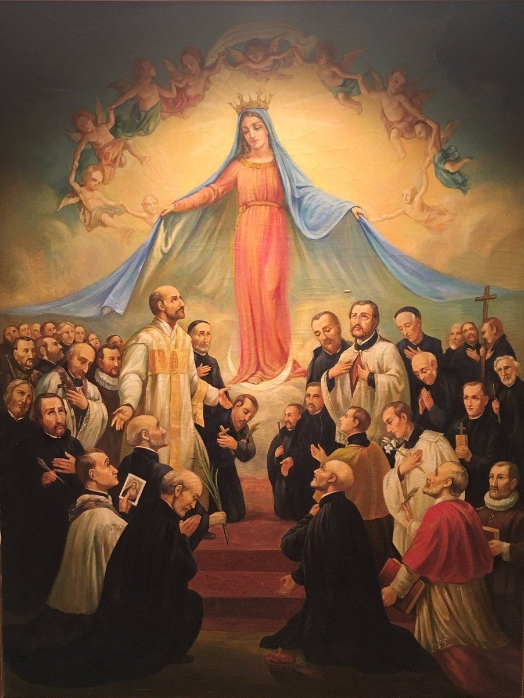

Pratitelji isusovačkih mučenika
Laikinja · supruga
Sv. Marija Zhu (rođ. Wu)
1850. – 1900.
Marija Zhu (rođ. Wu) — laikinja; supruga. Dobrotvorka; beatificirana 17.04.1955.; kanonizirana 01.10.2000. Ustrijeljena za Bokserskog ustanka dok je štitila svećenika Lea Ignacija Mangina.

Izvor slike
- Spomendan
- 9. srpnja
- Zaštitništvo
- Nije navedeno u izvoru
- Životni vijek
- 1850. – 1900.
- Djelovanje
- Progoni i progonstvo · Mučeništvo
- Razdoblje
- 19. stoljeće
- Rođenje — dostupni podaci
- 1850.; dan i mjesec nisu utvrđeni.
- Mjesto rođenja
- Zhujiahe, Hebei, Kina
- Datum smrti
- 20.07.1900.
- Mjesto smrti/mučeništva
- Zhujiahe, Hebei, Kina
- Okolnosti smrti/mučeništva
- Ustrijeljena za Bokserskog ustanka dok je štitila svećenika Lea Ignacija Mangina.
- Uloga
- Laikinja; supruga
- Mučenik
- Da
- Ostale oznake
- Dobrotvorka; beatificirana 17.04.1955.; kanonizirana 01.10.2000.
- Pripadnost
- Pratitelj isusovaca
- Drugi oblici imena
- Mary Zhu Wu · Maria Zhu nata Wu
Životopis
Marija Zhu (rođ. Wu) — laikinja; supruga. Dobrotvorka; beatificirana 17.04.1955.; kanonizirana 01.10.2000. Ustrijeljena za Bokserskog ustanka dok je štitila svećenika Lea Ignacija Mangina.
Mjesto rođenja: Zhujiahe, Hebei, Kina. 1850.; dan i mjesec nisu utvrđeni.
Mjesto smrti ili mučeništva: Zhujiahe, Hebei, Kina. Ustrijeljena za Bokserskog ustanka dok je štitila svećenika Lea Ignacija Mangina.
Dobrotvorka; beatificirana 17.04.1955.; kanonizirana 01.10.2000.
Život i nasljeđe
Marijin se osobni spomen veže uz pokušaj zaštite oca Mangina vlastitim tijelom. Popis Francuske biskupske konferencije razlikuje je od drugih kineskih mučenica sličnih imena koje su stradale u drugim mjestima. Njezina je prisutnost važna za razumijevanje događaja u Zhujiaheu: u crkvi nisu bili samo strani svećenici nego i domaći vjernici sa svojim osobnim odlukama i postupcima. Kao laikinja nije bila članica Družbe, ali dokumentirano zajedničko stradanje povezuje njezin život s isusovačkim mučenicima.
Pročitaj više na izvornoj stranici ↗